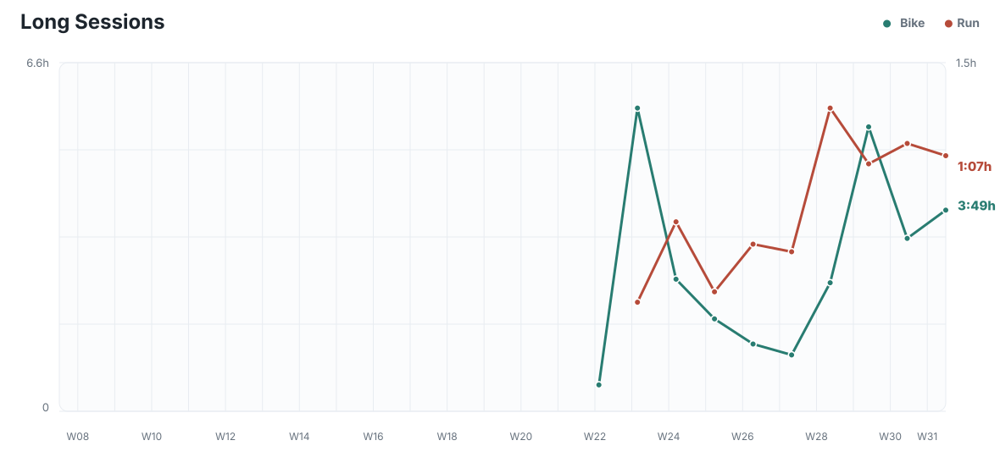
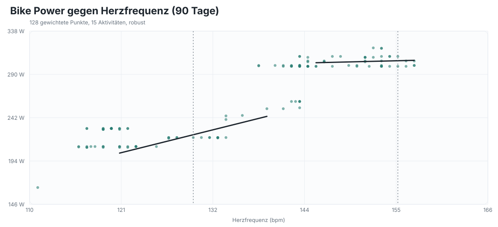
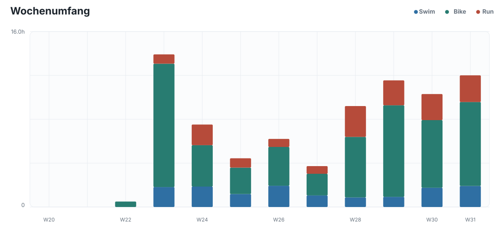
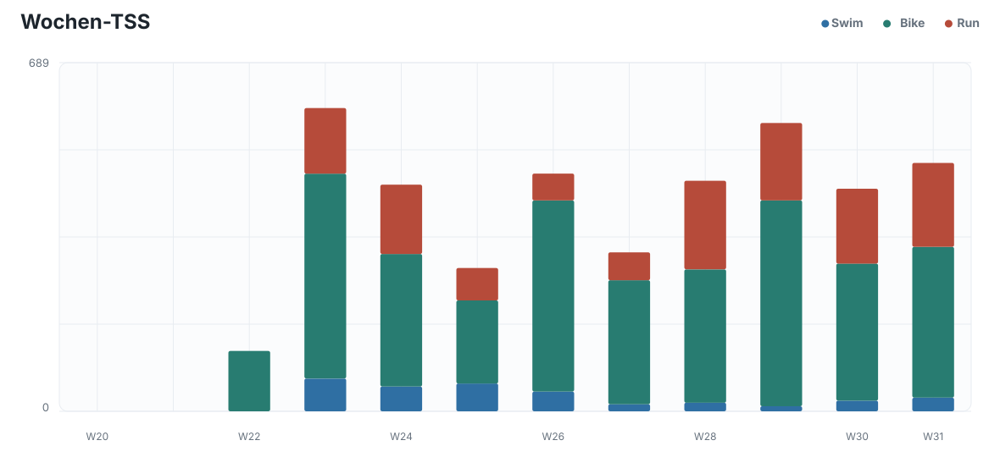
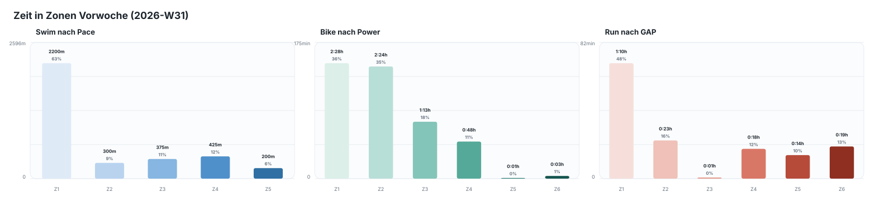
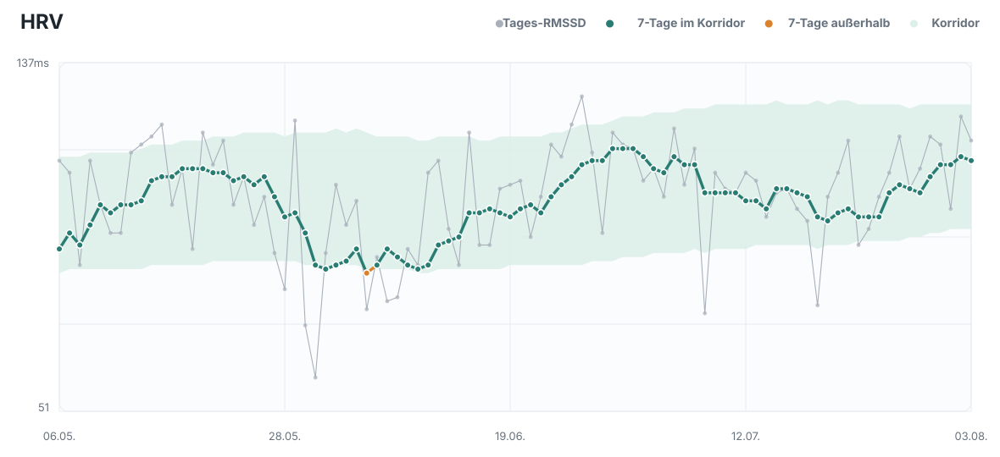
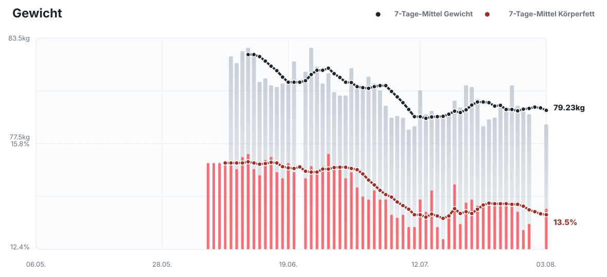

Mo 2026-08-03
Long
- 3:00h @230W
- 75g Kohlenhydrate/h
2026-08-03 bis 2026-08-09
1:15h @4:45/km
Nach externem Schwimmprogramm
60min @230W
Nach externem Schwimmprogramm
W31 umfasste rund 13:02h und 504 TSS und war damit eine klar belastende Aufbauwoche. Das Long Bike am Montag war mit 3:00h bei 229W, 120bpm und nur 0,6% HR-Drift sehr stabil, der Long Run am Donnerstag mit 1:07h bei 4:39/km GAP und 129bpm aerob kontrolliert. Das Threshold Bike wurde als 3x15min bei 309 bis 310W sauber umgesetzt. Der Threshold Run am Dienstag war bei rund 3:31 bis 3:54/km GAP deutlich schneller als das Soll von 3:55/km, deshalb wird die Laufintensität nicht weiter erhöht. Die zwei Schwimmeinheiten blieben mit zusammen 3.500m überwiegend locker, was zur noch nicht ausreichend validierten CSS und zur Krampfneigung passt. Die Ausfahrt am Samstag und der Canyoning-Zustieg am Sonntag ergeben zusätzlichen Ermüdungskontext, zählen aber nicht als spezifische Triathlon-Schlüsseleinheiten.
Stand 2026-08-03 sprechen HRV 118ms, 7-Tage-HRV 113ms innerhalb des Korridors von 96 bis 127ms, Ruhepuls 36bpm und 8:06h Schlaf bei Score 97 für gute Erholung. Das 7-Tage-Schrittmittel beträgt 7.448, mit erhöhten Alltagswerten am Dienstag bis Donnerstag der Vorwoche. Das Gewichtsmittel liegt bei 79,23kg und der Körperfettmittelwert bei 13,50%; für den 1. und 2. August fehlen die Wellness-Messwerte, deshalb ist daraus keine weitergehende Trendbewertung abzuleiten. Nach W31 ist die Last bereits auf ATL 57 bei CTL 62, TSB +5 und ACR 0,922 zurückgegangen. Die vollständige W32 ist damit vertretbar, eine weitere Progression von Dauer oder Intensität dagegen nicht.
Für W32 werden wegen der Verfügbarkeit alle sieben Einheiten auf Montag bis Donnerstag verteilt: Long Bike am Montag, Long Run plus Schwimmtraining am Dienstag, die beiden qualitativen Land-Einheiten am Mittwoch und Basic Bike plus zweite Schwimmeinheit am Donnerstag. Das vermeidet eine Dreifachbelastung und lässt die erzwungenen drei Ruhetage von Freitag bis Sonntag als Erholung vor den Kurztriathlons am 15. und 16. August wirken. Der Long Run bleibt bei 1:15h, weil der mechanische Laufumfang zuvor bewusst begrenzt wurde. Die Schwellenreize bleiben bei den zuletzt zuverlässig steuerbaren Zielwerten von 310W und 3:55/km, statt das bereits hohe tatsächliche Tempo weiter anzuheben. Die Schwimmeinheiten folgen dem externen Programm, wobei kontrollierte Wiederholungen und krampffreie Technik wichtiger sind als eine forcierte CSS-Pace.










